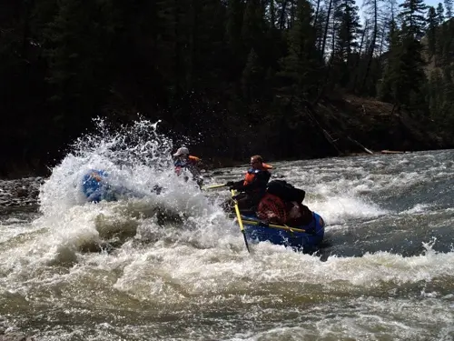

Los Dientes del Diablo
Expert Level
Experience the ultimate adrenaline rush on this challenging Class IV-V rapid. Los Dientes del Diablo ("The Devil's Teeth") is perfect for experienced paddlers seeking the most intense white water experience. Navigate through powerful waves, sharp turns, and technical sections with our expert guides.
- Duration: Full Day (8 hours)
- Distance: 15 miles
- Group Size: 4-8 people